Model name: adm_2_5 (No threshold. follows anomalies. value limits 1/0 applied. Normalization applied.)
Model type: MLP
Model description: 83x32x32x32x6 MLP to detect anomalies on 3 panels based on the previous 20 points from 3 panels + 20 time points + derivatives of 3 panels. Tested on previously unseen data. Trained to detect sensor spikes and const regions only (added more variations)
Model data size: NA
Test results:
Accuracy on NO anomalies (0): 0.991
Accuracy on ANOMALIES (1): 0.705
Figure 1: model inferences on dataset_1187_10_sens.png
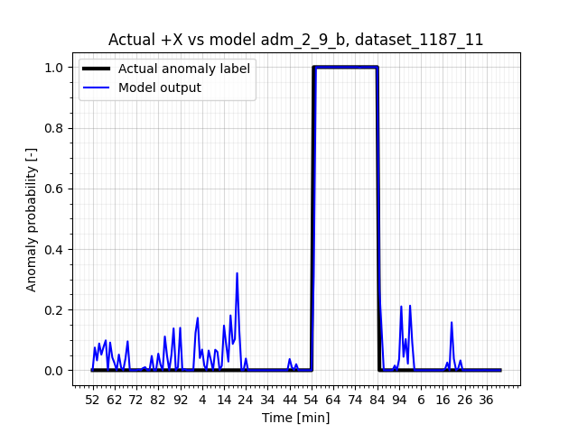
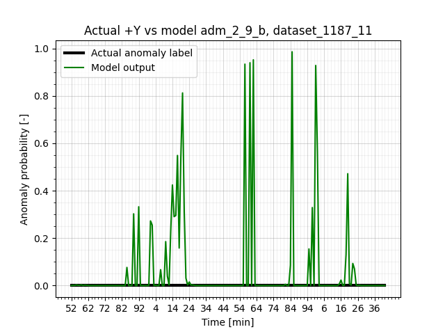
Figure 2: model inferences on dataset_1187_11_sens.png
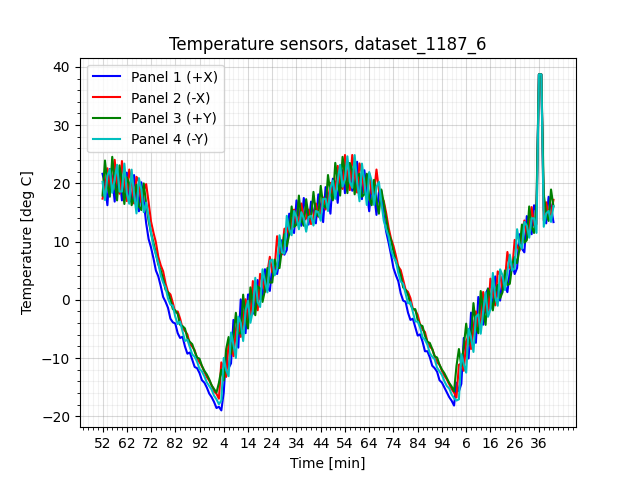
Figure 3: model inferences on dataset_1187_6_sens.png
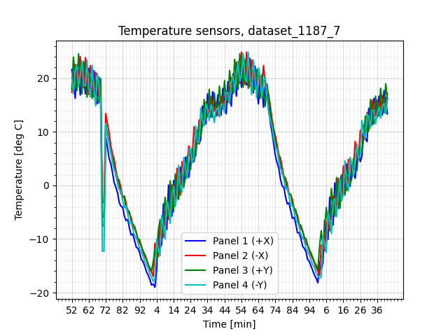
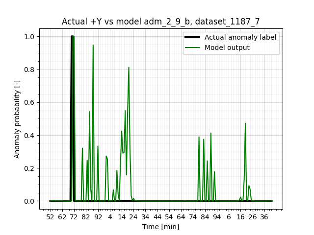
Figure 4: model inferences on dataset_1187_7_sens.png
Figure 5: model inferences on dataset_1187_1_sens.png
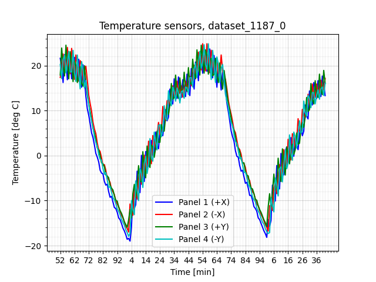
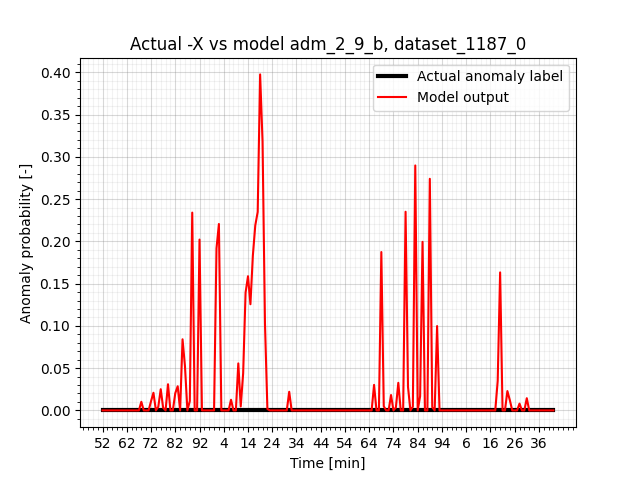
Figure 6: model inferences on dataset_1187_0_sens.png
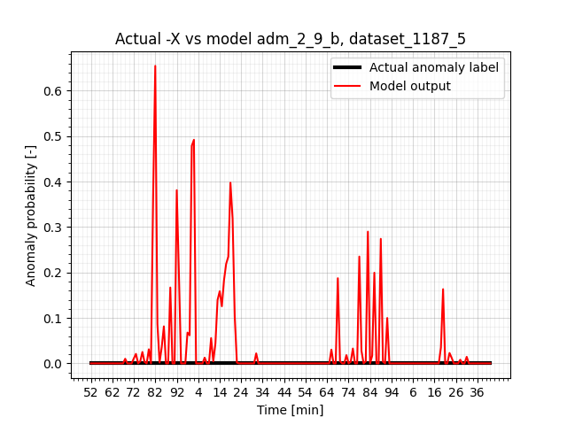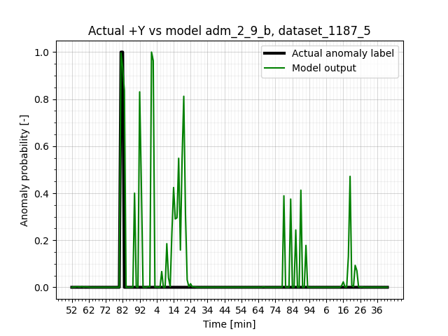
Figure 7: model inferences on dataset_1187_5_sens.png
Figure 8: model inferences on dataset_1187_4_sens.png
Figure 9: model inferences on dataset_1187_13_sens.png
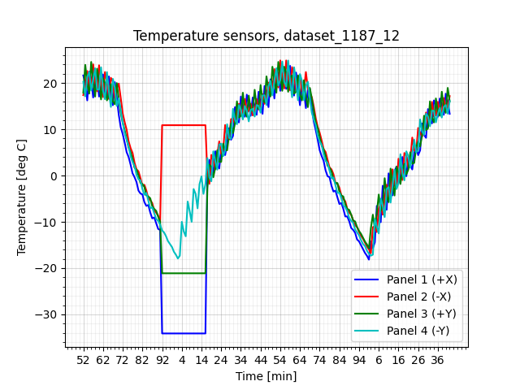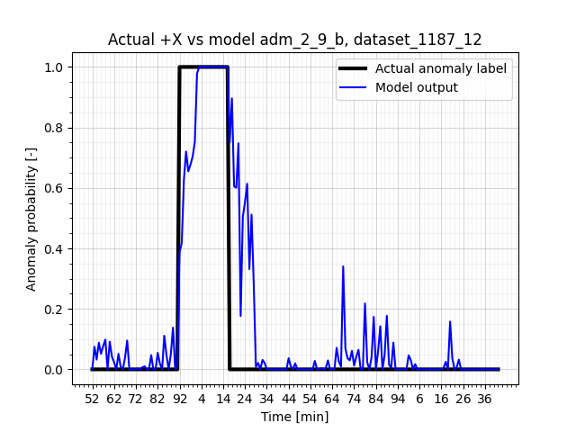
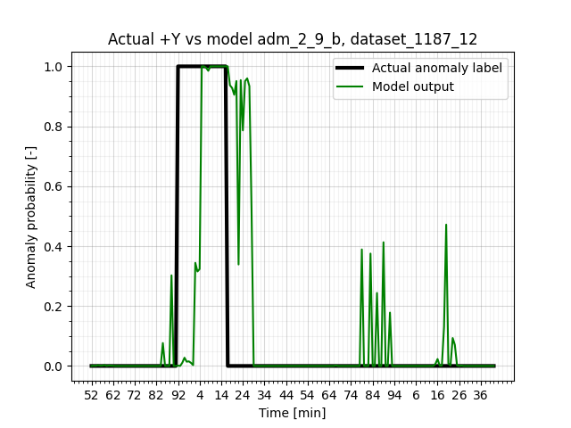
Figure 10: model inferences on dataset_1187_12_sens.png
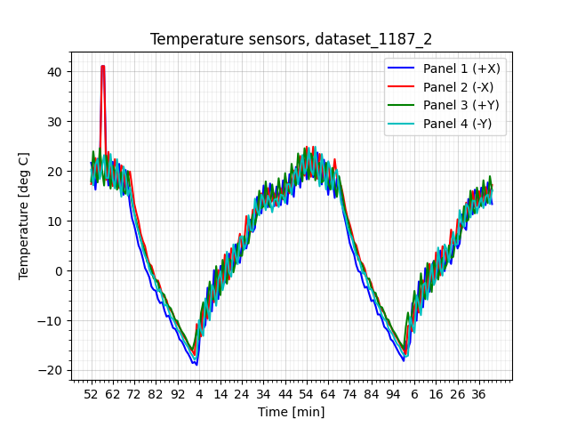
Figure 11: model inferences on dataset_1187_2_sens.png
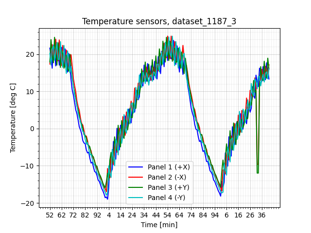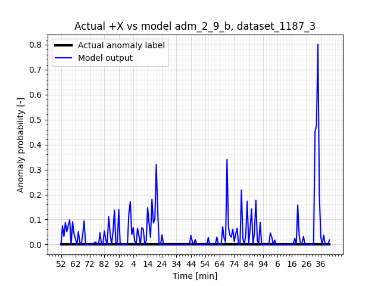
Figure 12: model inferences on dataset_1187_3_sens.png
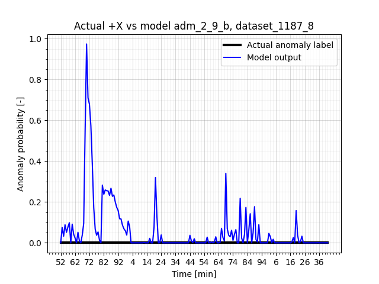
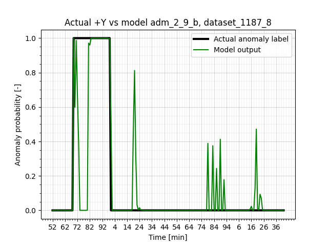
Figure 13: model inferences on dataset_1187_8_sens.png
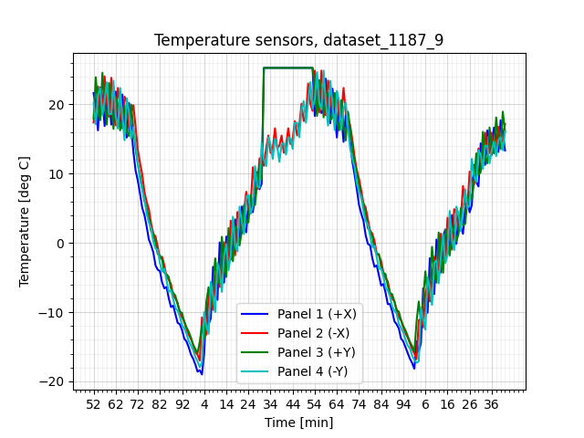
Figure 14: model inferences on dataset_1187_9_sens.png


 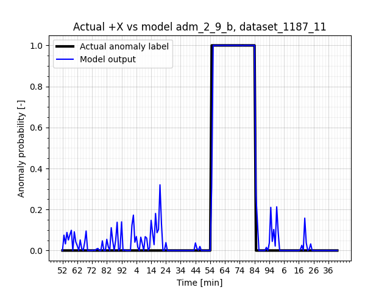
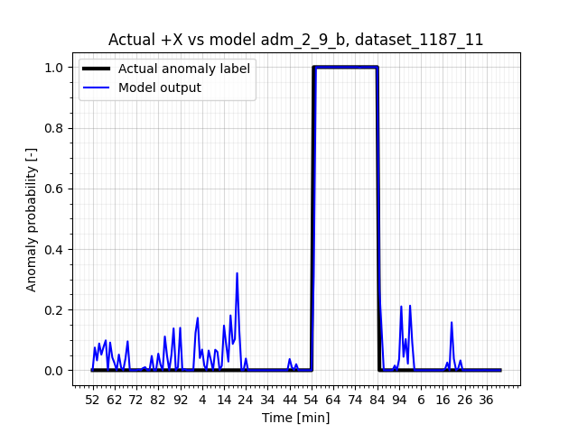 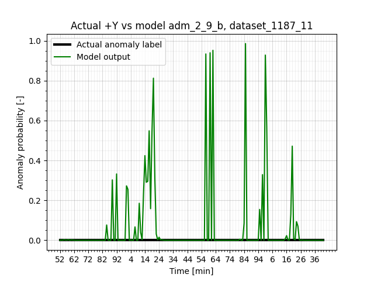
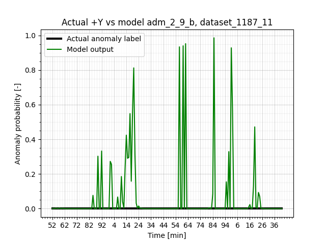


 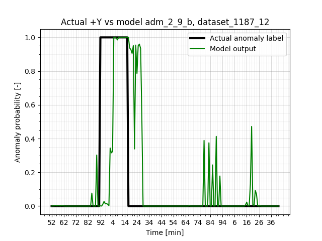
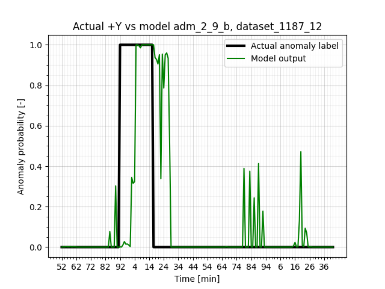


 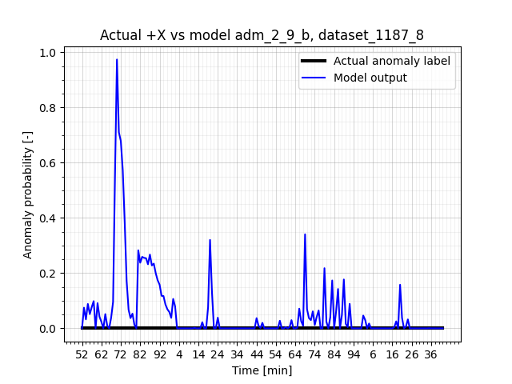
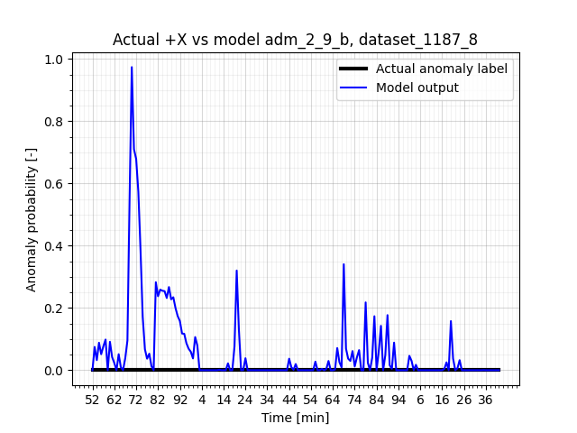 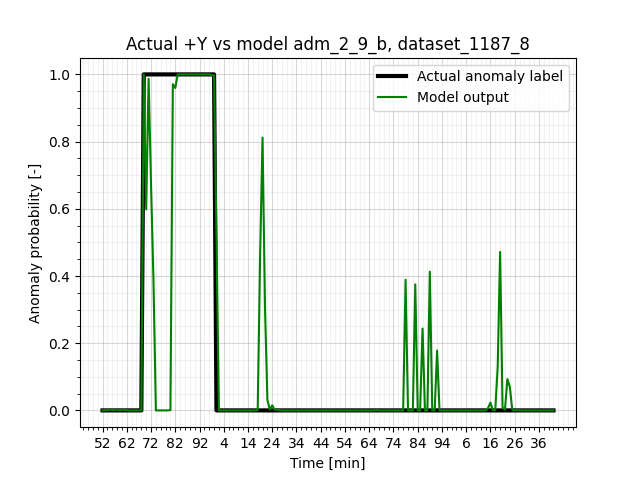
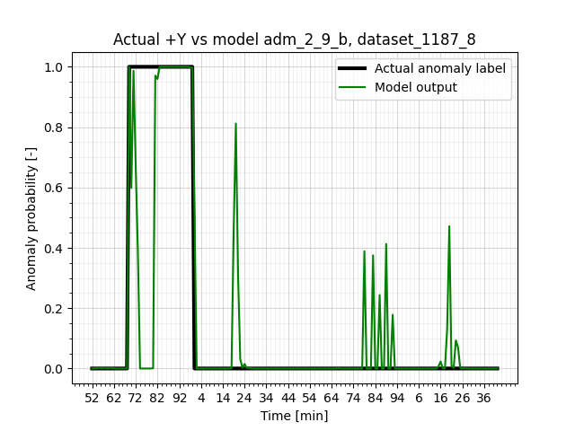